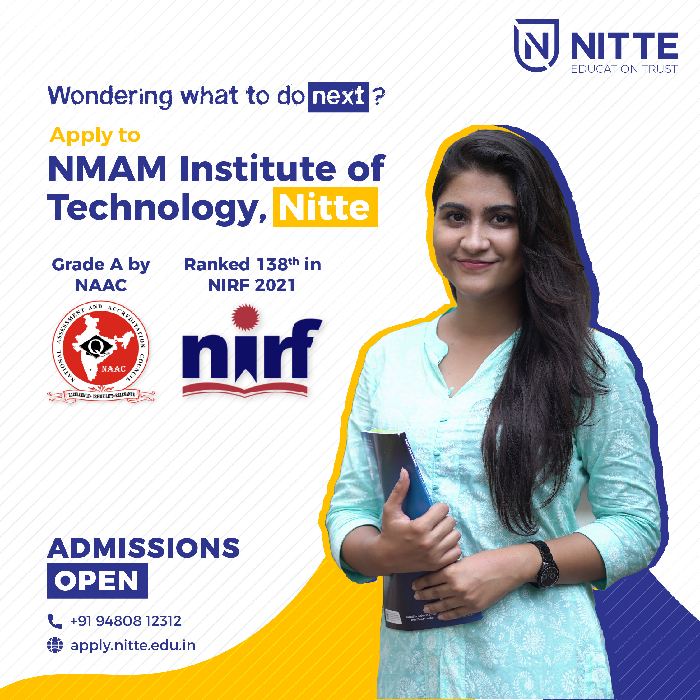

Nitte Mahalinga Adyantaya Memorial Institute of Technology(NMAMIT), Nitte, established in 1986 and recognized by the All India Council for Technical Education, New Delhi, has been a constituent college of Nitte (Deemed to be University), Mangaluru,since June 2022. Ranked 175 in the National Institutional Ranking Framework (NIRF) 2022 by MHRD, GoI among the engineering colleges in India,the College has been placed under ‘Platinum’ category for having high industry linkages by the AICTE-CII Survey of Industry-Linked Technical Institutes 2020. NMAMIT, the off-campus centre of Nitte DU located at Nitte village, has active collaborations with several international universities and organizations for faculty and student exchanges, research, internships and placements
Programs Offered Under Undergraduate
Research Administration
From the development of Cleaner-burning fuel and micro machining system, to the advancement semiconductor devices, research at NMAMIT aims to advance the frontiers of human knowledge and develop Indian nation and world as a whole. The following offices report to the Research Dean:
Additionally, the Dean of Research, with assistance of the Research Advisory Board, is responsible for the formulation and implementation of policies on sponsored research, research incentive and research promotions.
ABHYUDAY, The Department of Counselling, Welfare, Training & Placement
Abhyuday-The Department of Counselling, Welfare, Training & Placement consists of a Department Head, a full-time Counsellor, an Office Superintendent, Placement Executive, Faculty coordinators, committed Staff and student volunteers who work towards student well-being. Campus recruitment first began in 1994 with Kirloskar Snydergenral as the first company to visit campus to recruit two students. Now the numbers have skyrocketed to 200+ companies visiting the campus and making 1200 +job offers to our students. The Department conducts programs that help the students enhance their knowledge and equip themselves with industry-relevant skills and technology. Soft skills training is arranged to help the students ace the selection process and give them a superior edge in the competitive job markets. Non-placed students are assisted with placements for a year after their graduation through 'Off-Campus' initiatives and referrals. Team Abhyuday does everything positively possible to help students get placed in their dream job by using and creating internal resources, and engaging students in volunteering activities throughout their campus stay. The Alumni generously & readily share their knowledge, skills and expertise, whenever sought. The team has been proactive in placing students through the years. Orientation programs for fresh entrants, training programs in leadership, public speaking, effective communication and mock interviews are conducted regularly, thereby preparing students for placements.
| Academic Year | Count of Registered students | Multiple Offers | Unique Offers | Offcampus Court |
|---|---|---|---|---|
| 2015-2016 | 71 | 44 | 37 | 16 |
| 2016-17 | 61 | 57 | 38 | 13 |
| 2017-18 | 71 | 44 | 37 | 16 |
| 2018-19 | 61 | 57 | 38 | 13 |
| 2020-21 | 71 | 44 | 37 | 16 |
| 2021-22 | 61 | 57 | 38 | 13 |